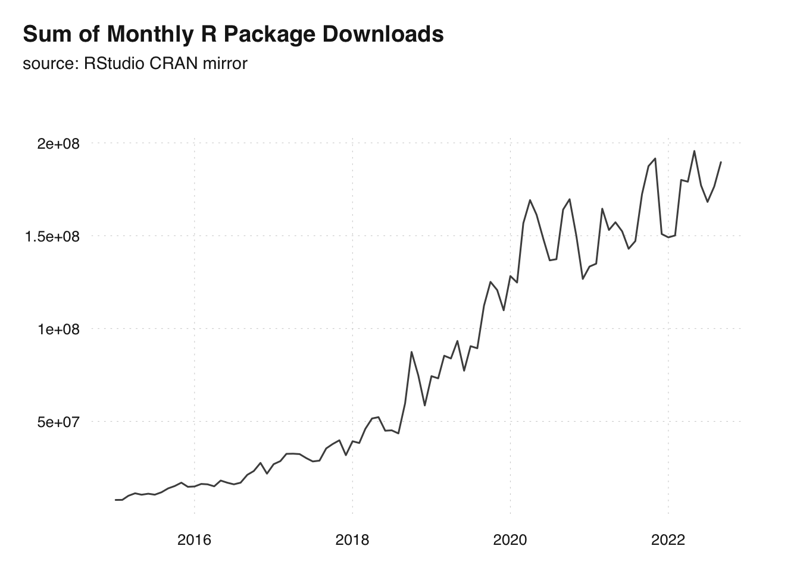

1 Introduction
Simply put, the devOps carpentry is the art of making our work deployable and functional on other machines.
1.1 Why Work Like a Software Engineer?
First of all, because everybody and their grandmothers seem to do it. Statistical computing continues to be on the rise in many branches of research. The below chart shows the obvious trend in the sum of total R package downloads per month since 2015.
Code
library(cranlogs)
library(dplyr)
library(lubridate)
library(tsbox)
top <- cranlogs::cran_top_downloads()
packs <- cranlogs::cran_downloads(
from = "2015-01-01",
to = "2022-09-30")
packs |>
group_by(floor_date(date, "month")) |>
summarize(m = sum(count)) |>
ts_plot(title = "Sum of Monthly R Package Downloads",
subtitle = "source: RStudio CRAN mirror")Bandwagonism aside, source code can be a tremendously sharp, unambiguous and international communication channel. Your web scraper does not work? Instead of reaching out in a clumsy but wordy cry for help, posting what you tried so far described by source code will often get you good answers within hours. Platforms like Stackoverflow or Crossvalidated do not only store millions of questions and answers, they also gather a huge and active community to discuss issues. Or think of feature requests: After a little code ping pong with the package author your wish eventually becomes clearer. Let alone chats with colleagues and co-authors. Sharing code just works. Academic journals have found that out, too. Many outlets require you to make the data and source code behind your work available. Social Science Data Editors is a bleeding edge project at the time of writing this, but is already referred to by top notch journals like American Economic Review (AER).

In addition to the above reproducibility and ability to share, code scales and automates. Automation is not only convenient. Like when you want to download data, process and create the same visualization and put it on your website any given Sunday. Automation is inevitable. Like when you have to gather daily updates from different outlets or work through thousands of .pdfs.
Last but not least programming enables you to many things you couldn’t do w/o being an absolute guru (if at all) if wasn’t for programming. Take visualization. Go, check these D3 Examples. Now, try to do that in Excel. If you did these things in Excel it would make you an absolute spreadsheet visualization Jedi, probably missing out on other time consuming skills to master. Yet, with decent, carpentry level programming skills you can already do so many spectular things while not really specializing and staying very flexible.
1.2 Why Work Like an Operations Engineer?
While software development became closer to many researcher, operations the second part of the term devOps is much further away from the average researcher or business analyst. Why even think about Operations? Because we can afford to do so. Operations have become so much more accessible in recent years, that many applications can be dealt with single handedly. Even one’s production applications may still be administered by operations professionals, the ability to create and run a proof of concept from scratch is an invaluable skill. A running example says more than a 15 page specification that fails to translate business talk into tech talk. The other way around, something to look at in early stage helps to acquire funds and convince managers and other collaborators.
But people without a computer engineering background are by no means limited to proof of concepts these days. Trends like Cloud computing and software-as-a-service products help developers focus on their expertise and limit the amount of knowledge needed to host a service in secure and highly available fashion.
Also, automation is automation is key to the devOps approach and an important reason why devOps thinking is also very well suited for academic researchers and business analysts. So called continuous integration can help to enforce a battery of quality checks such as unit tests or installation checks. Let’s say a push to certain branch of a git repository leads to the checks and tests. In a typical workflow, succesfull completion of quality checks triggers continuous deployment to a blog, rendering into a paper or interactive data visualization.
By embracing both parts of the devOps approach researchers do not only gain extra efficiency, but more importantly improve reproducibility and therefore accountability and quality of their work. The effect of a devOps approach on quality control is not limited to reproducible research in a publication sense, but also enforces rules during collaboration: no matter who contributes, contribution gets gut checked and only deployed if checks passed. Similar to the well established term software carpentry that advocates a solid, application minded understanding of programming with data, I suggest a devOps carpentry level understanding of development and operations is desirable for the programming data analyst.
1.3 How to Read this Book?
The focal goal of this book is to map out the open source ecosystem, identify neuralgic components and give you an idea of how to improve not only in programming but also in navigating the wonderful but vast open source world. Chapter 2 is the roadmap for this book: it describes and classifies the different parts of the open source stack and explains how these pieces relate to each other. Subsequent chapters highlight core elements of the open source toolbox one at a time and walk through applied examples mostly written in the R language.
This book is a companion. The companion I wish I had when I started an empirical, data intensive PhD in economics. Yet, the book is written years after said PhD was completed and with the hindsight of 10+ years in academia. Programming with Data is written based on the experience of helping students and seasoned researchers of different fields with their data management, processing and communication of results.
If you are confident in your ambition to amp up your programming to at least solid software carpentry level within the next few months, I suggest to get an idea of your starting point relative to this book. The upcoming backlog section is essentially a list of suggested to-dos on your way to solid software carpentry. Obviously, you may have cleared a few tasks of this backlog item before reading this book which is fine. On the other hand you might not know about some of the things that are listed in the requirement section which is fine, too. The backlog and requirements section just mean to give you some orientation.
If you do not feel committed, revisit the previous section, discuss the need for programming with peers from your domain and possibly talk to a seasoned R or Python programmer. Motivation and commitment are key to the endurance needed to develop programming into a skill that truly leverages your domain specific expertise.
1.4 Backlog
If you can confidently say you can check all or most of the below, you have reached carpentry level in developing and running your applications. Even if this level is your starting point you might find a few useful tips or simply may come to cherry pick. In case you are rather unfamiliar with most of the below, the classification, overview and contextualization devOps carpentry provides is likely this reads most valuable help to you.
A solid, applied understanding of git version control and the collaboration workflow associated with git does not only help you stay ahead of your own code. Git proficiency makes you a team player. If you are not familiar with commits, pulls, pushes, branches, forks and pull requests, devOps carpentry will open up a new world for you. An introduction to industry standard collaboration makes you fit into plethora of (software) teams around the globe – in academia and beyond.
Your backlog en route to a researcher who is comfortable in devOps carpentry obviously contains a strategy to improve your programming itself. To work with data in the long run, an idea of the challenges of data management from persistent storage to access restrictions should complement your programming. Plus, modern data driven science often has to handles datasets so large, infrastructure other than local desktops come into play. Yet, high performance computing (HPC) is by far not the only reason why its handy for a researcher to have a basic understanding of infrastructure. Communication of results including data dissemination or interactive online reports require the content to be served from a server with permanent online access. Basic workflow automation of regular procedures, e.g., for a repeated extract-transform-load (ETL) process to update data, is a low hanging (and very useful) fruit for a programming researcher.
The case studies at the end of the book are not exactly a backlog item like the above but still a recommended read. The case studies in this book are hands-on programming examples – mostly written in R – to showcase tasks from API usage to geospatial visualization in reproducible fashion. Reading and actually running other developer’s code does not only improve one’s own code, but helps to see what makes code inclusive and what hampers comprehensibility.
1.5 Requirements
Even though devOps carpentry aims to be inclusive and open to a broad audience with different starting points, several prerequisites exist to get the most out of this book. I recommend you have made your first experiences with an interpreted programming language like R or Python. Be aware though that experience from stats or math course does not automatically make you a programmer as these course are rightfully focused on their own domain. Books like R for Data Science or websites like the The Carpentries help to solidify your data science minded, applied programming. Advanced R, despite its daunting title, is a very good read to get past the superficial kind of understanding of R that we might acquire from a first encounter in stats course.
A certain familiarity with console / terminal basics will help the reader sail smoothly. At the end of the day there are no real must-have requirements to benefit from this book. The ability to self-reflect on one’s starting point remains the most important requirement to leverage the book.
devOps carpentry willingly accepts to be overwhelming at times. Given the variety of topics touched in an effort to show the big picture, I encourage the reader to remain relaxed about a few blanks even when it comes to fundamentals. The open source community offers plenty of great resources to selectively upgrade skills. This books intends to show how to evaluate the need for help and how to find the right sources. If none of the above means something to you though, I recommend to make yourself comfortable with the basics of some the above fields before you start to read this book.